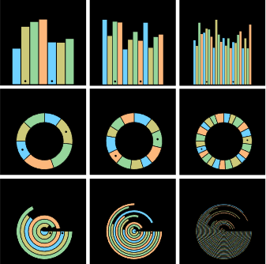
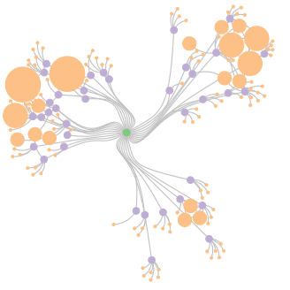
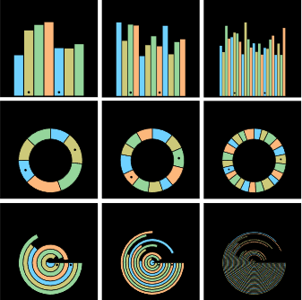
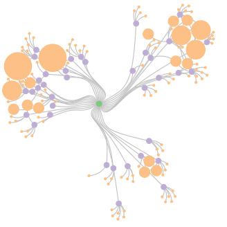

Journée Visu 2020
9 Juin 2020, TGCC - Campus Teratec, Bruyères-le-Châtel
 




La journée annuelle du GT Visualisation du GdR IG-RV aura lieu le mardi 9 Juin 2020 dans les locaux du TGCC/Teratec. Cette journée a pour vocation de rassembler les acteurs, académiques et industriels de la communauté française en visualisation, afin d'échanger sur les problématiques et les enjeux actuels et futurs de la visualisation. Cette journée couvre entre autres la visualisation scientifique (SciVis) et la visualisation d'information (InfoVis), appliquées dans de nombreux domaines tels que la simulation numérique, la médecine personnalisée ou encore l'intelligence artificielle.
Accès

La journée se déroulera sur le site du campus Ter@tec, dans le grand amphithéatre du TGCC et en salle Valladon du bâtiment Ter@tec.
Plus d'information pour l'accès à cette adresse.
INSCRIPTION
La journée Visu 2020 est gratuite et ouverte à tous dans la limite des capacités d'accueil. Pour assister à cette journée, inscrivez-vous avant le 9 mai 2020.
>>>>>>>>>> Pour s'inscrire cliquez ici et remplisser ce formulaire. <<<<<<<<<<<
Appel à contribution
Nous sollicitons des *soumissions sur résumé* (jusqu'à 2 pages), qui présentent des travaux originaux. Il peut s'agir de travaux de recherche finalisés, mais aussi de recherche en cours, projets ANR, Européens ou autres, retour d'expérience industriels, etc. Il peut également s'agir de travaux qui ont été soumis mais pas acceptés, et présentés dans le but de les améliorer en vue d'une nouvelle soumission ou tout simplement afin de "valoriser" l'investissement. Il peut enfin s'agir de travaux non encore soumis, et présentés en vue d'avoir un premier retour de la communauté. L'objectif n'est pas de faire de la sélection mais au contraire de permettre à tout le monde de présenter ses travaux. La date limite de soumission est fixée au 11 mai 2020.
Modalités de soumission
La soumission est un fichier PDF de 2 pages maximum, plus une page optionnelle incluant des figures en couleur. Les feuilles de style MS Word et LaTeX peuvent être téléchargées ici.
Format de la présentation
Lors de la journée Visu, vous pourrez présenter votre soumission sous trois formes:
- Présentation orale (français ou anglais)
- Poster
- Démonstration
Thématique
Les thématiques couvertes par l'appel sont variées et incluront:
* visualisation scientifique
* visualisation d’information
* visualisation de grandes masses de données et visualisation haute performance
* visualisation pour la médecine personnalisée
* visualisation et intelligence artificielle
* design de visualisation
* visualisation et storytelling
* visualisation in-situ
* visualisation analytique
* perception visuelle et visualisation
* interactions dans un contexte d'analyse visuelle
* évaluation de la visualisation
* couplage simulation / visualisation
* visualisation de données relationnelles (par ex.réseaux sociaux)
* fouille visuelle des données et techniques de navigation dans les entrepôts de données
* architectures client-serveur pour la visualisation de données distantes
* visualisation collaborative (colocalisée ou à distance, synchrone ou asynchrone)
* visualisation sur dispositifs nouveaux (par ex. murs d'écrans, tablettes tactiles, montres intelligentes) et avec des dispositifs d'interaction non conventionnels (par ex. capteurs 3D)
* méthodes topologiques pour la visualisation
* visualisation de données géolocalisées
* visualisation de données biologiques et moléculaires
* visualisation de données incertaines
*
et tout autre thème novateur en rapport avec la visualisation scientifique ou la visualisation d'information.
>>>>>>>>>> Pour contribuer cliquez ici et remplissez ce formulaire. <<<<<<<<<<<
KEYNOTE

Speaker
Jeffrey Heer
Title
Visualization is not Enough
Abstract
We are witnessing both increased application and public skepticism of data-driven methods for decision making and automation. Within this regime, data visualization — as a technology — seems well-poised to provide valuable insight and oversight. Though arguably a *necessary* component in the appropriate use of data, visualization by itself is far from *sufficient*. Data visualization — as a community of practice — sits at the confluence of many “source” disciplines, including cartography, computer science, graphic design, psychology, and statistics. The practice of principled interdisciplinary thinking is perhaps our greatest asset, suggesting avenues for our community to have outsized, beneficial impact in the world. In this talk I will consider the obvious yet potentially contrarian view that *visualization is not enough* — and why this realization is liberating for both research and practice. I will point to vanguards and future prospects in “visualization” research that I believe exemplify real-world relevance and require rich intellectual integration: accessibility, interactive visualization systems, reasoning under uncertainty, and interactions with machine learning models. One guiding heuristic we might consider is the degree to which we not only benefit from, but successfully contribute back to, the adjacent disciplines that fuel our endeavors. Our community is uniquely positioned to contribute to issues of critical importance to society. Let’s consider how we should rise to the challenge!
Jeffrey Heer’ Capstone “Visualization is Not Enough” slides are available here.
Biography
Jeffrey Heer is the Jerre D. Noe Endowed Professor of Computer Science & Engineering at the University of Washington, where he directs the Interactive Data Lab and conducts research on data visualization, human-computer interaction and social computing. The visualization tools developed by Jeff and his collaborators (Vega, D3.js, Protovis, Prefuse) are used by researchers, companies, and thousands of data enthusiasts around the world.
Jeff's research papers have received awards at the premier venues in Human-Computer Interaction and Visualization (ACM CHI, ACM UIST, IEEE InfoVis, IEEE VAST, EuroVis). Other honors include MIT Technology Review's TR35 (2009), a Sloan Fellowship (2012), an Allen Distinguished Investigator Award (2014), a Moore Foundation Data-Driven Discovery Investigator Award (2014), and the ACM Grace Murray Hopper Award (2016).
Jeff holds B.S., M.S., and Ph.D. degrees in Computer Science from UC Berkeley, whom he then betrayed to join the Stanford faculty (2009–2013). He is also a co-founder of Trifacta, a provider of interactive tools for scalable data transformation.
More information.
PROGRAMME
| Horaire | Description |
|---|---|
| 8:30 - 9:15 | Accueil |
| 9:15 | Introduction de la journée |
| 9:30 | Conférence invitée: ► Visualization is Not Enough Jeffrey Heer. |
| 10:45 | Pause + posters |
| 11:30 | ??? Session 1 : Visualisation d'informations et physicalisation |
| 12:55 | Pause Déjeuner |
| 13:55 | ??? Session 2 : Visualisation scientifique et 3D |
| 15:05 | Pause + démos et posters |
| 15:50 | ??? Session 3 : Techniques et applications |
| 17:00 | ??? Panel sur les perspectives et les tendances du domaine : |
| 18:00 | Conclusions de la journée |
POSTERS ET DEMONSTRATIONS
Posters
Posters + démonstrations
ORGANISATEURS 2020
Précédentes Journées Visu
- Journée Visu 2019: 17 mai 2019, Télécom ParisTech, Paris
- Journée Visu 2018: 25 mai 2018, EDF Lab, Palaiseau
- Journée Visu 2017: 7-8 juin 2017, IFP Energies nouvelles, Rueil-Malmaison.
- Journée Visu 2014 : 7 novembre 2014, Télécom ParisTech, Paris
- Journée Visu 2013 : 6 novembre 2013, Institut de Biologie Physico-Chimique, Paris
- Journée Visu 2012: 25 septembre 2012, Télécom ParisTech, Paris
- Journée Visu 2011: 12 octobre 2011, CEA, Bruyères-le-Châtel
- Journée Visu 2010: 5 octobre 2010, EDF, Clamart